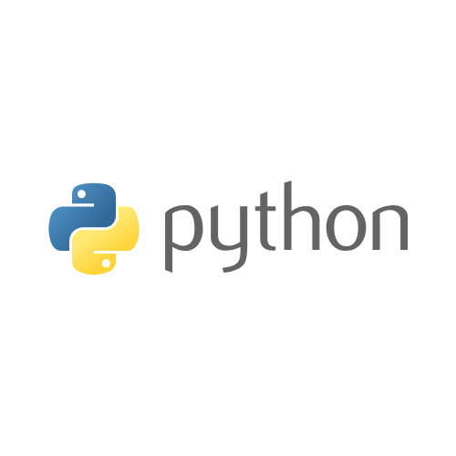
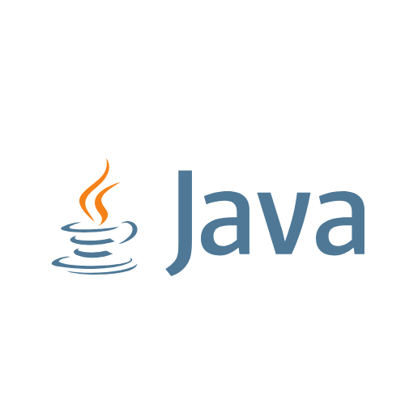

Profile
閲覧いただきありがとうございます！現在、大学に通っております駿(@shun_py711)と申します。。
今は、プログラミング言語「Python」を勉強中です！
以下にざっくりとできることと、作成したプログラムを公開しておりますので、ご覧いただければ幸いです。
Skills
-

Python
今、勉強中の言語です。
Beautiful Soupを用いたwebスクレイピングや、
Djangoでの簡易的なブログサイトを作成することができます。
機械学習や自動化などにも強い魅力的な言語なので、これから積極的に学んでいきたいです。 -

html&css
このサイトを一から作成できたのはHTML&CSSのおかげです。
サイト作成することで、HTML&CSSの仕組みが理解できました。
また、DjangoのWebアプリ等の、使いやすさはこれらのフロントエンド言語によって高められるため、
個人開発に挑戦する際など、度々向き合うことになりそうです。 -
サーバ技術
仮想マシンにLinuxを入れてサーバ運用をしてみました。
デプロイするだけで、手こずるのでまだまだ使えるとは言えないですが(笑)
作ったプログラムの公開やアプリのメンテナンス等に必要なので必ず理解したい技術の一つです。 -

Java
継承やカプセル化といったオブジェクト指向は、Javaで学びました。
基本的な構文の理解やオブジェクト指向を用いたプログラミングに加えて、簡易的なGUIを作ることができます。
Works
プログラミングを用いて作成したものをいくつか紹介します。
また、ここで挙げられなかったものはGitHubにて公開しています。